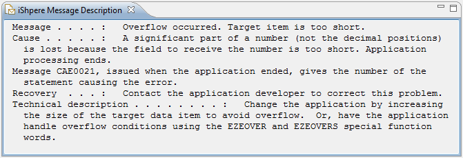

To edit the message descriptions of a message file do the following.
Use the context menu to edit a message description:
The preview button opens the Message Description Preview view, which is refreshed each time you click on a message description:
